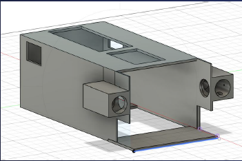
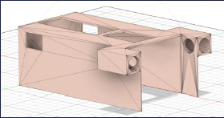
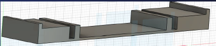
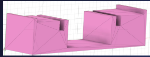
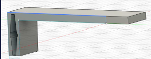
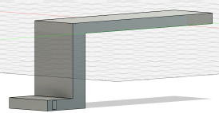
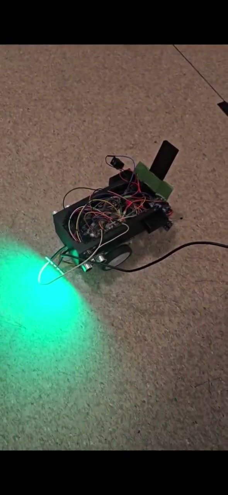

Mini Delivery
System
The autonomous mini delivery robot was built as part of an ENG 200 design project. It was designed to navigate a taped course, avoid obstacles, detect pickup and drop-off states, and actuate a servo-driven payload lift. My contribution focused on the CAD and 3D-printed physical design, including the robot body, front opening, servo-supported lift geometry, payload interface, and clearance around sensors, wiring, and lift motion.

Integrated Prototype
Final robot assembly on the course, showing the body layout, exposed sensor region, wiring volume, and front lift area as one physical system.
Course Navigation Test
Course footage used to check whether the body layout, sensor placement, and navigation logic could work together on the taped path.
Design Constraints
CAD + Printed Mechanism
The main design problem was the front of the robot, where the lift path, payload interface, ultrasonic sensor view, motor support, and wiring all competed for the same space. I revised the body and lift geometry to keep the payload path open while preserving sensor visibility and access to the electronics.


Iteration 1Body and Sensor Clearance
Added a motor-support platform and increased spacing around the front sensors.


Iteration 1Lift Support Geometry
Lowered the servo platform to increase clearance for the forklift.


Iteration 1Side Profile
Integrated the servo directly into the forklift for a simpler drive connection.
Subsystem Testing
The team tested the lift, sensor feedback, and course navigation separately before combining them in the final sequence. These checks were used to debug the pickup and drop-off sequence and isolate mechanical issues from payload-detection and timing problems.

Sensor Feedback Check
Checked sensor and status response during navigation and drop-off detection.
Servo Lift Check
Checked payload engagement and forklift motion through the lift range.